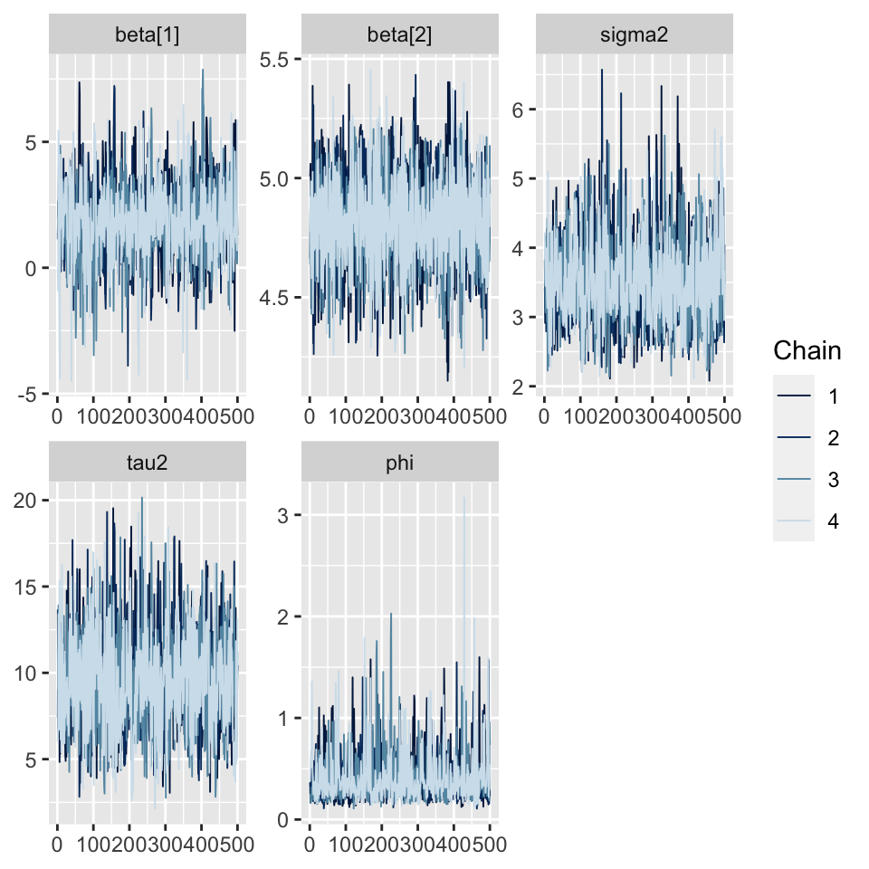
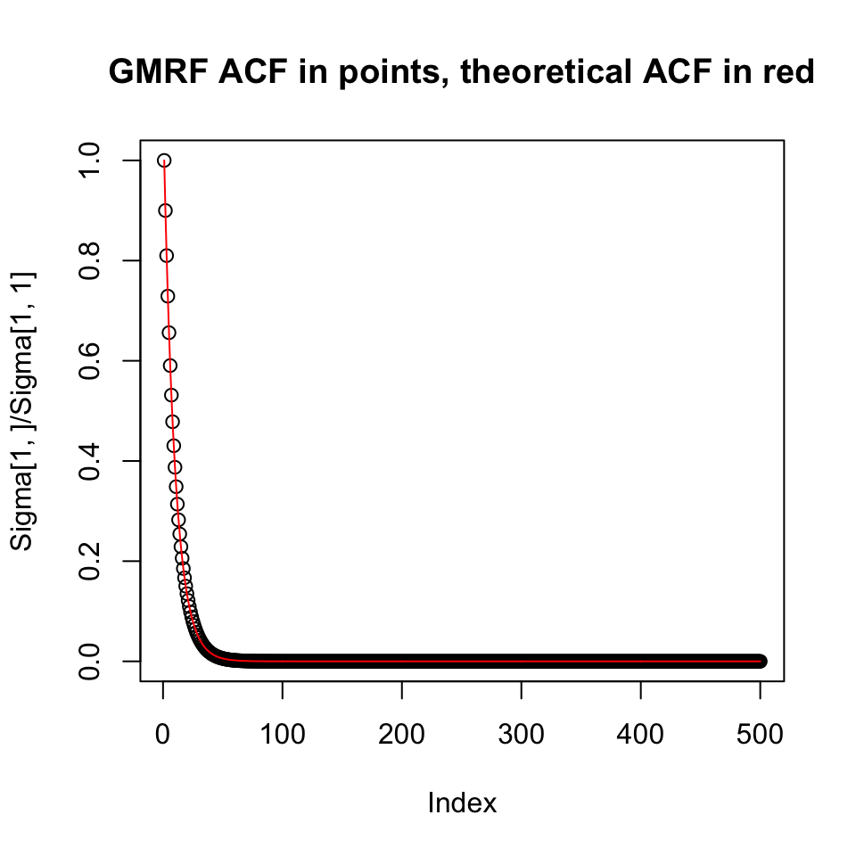
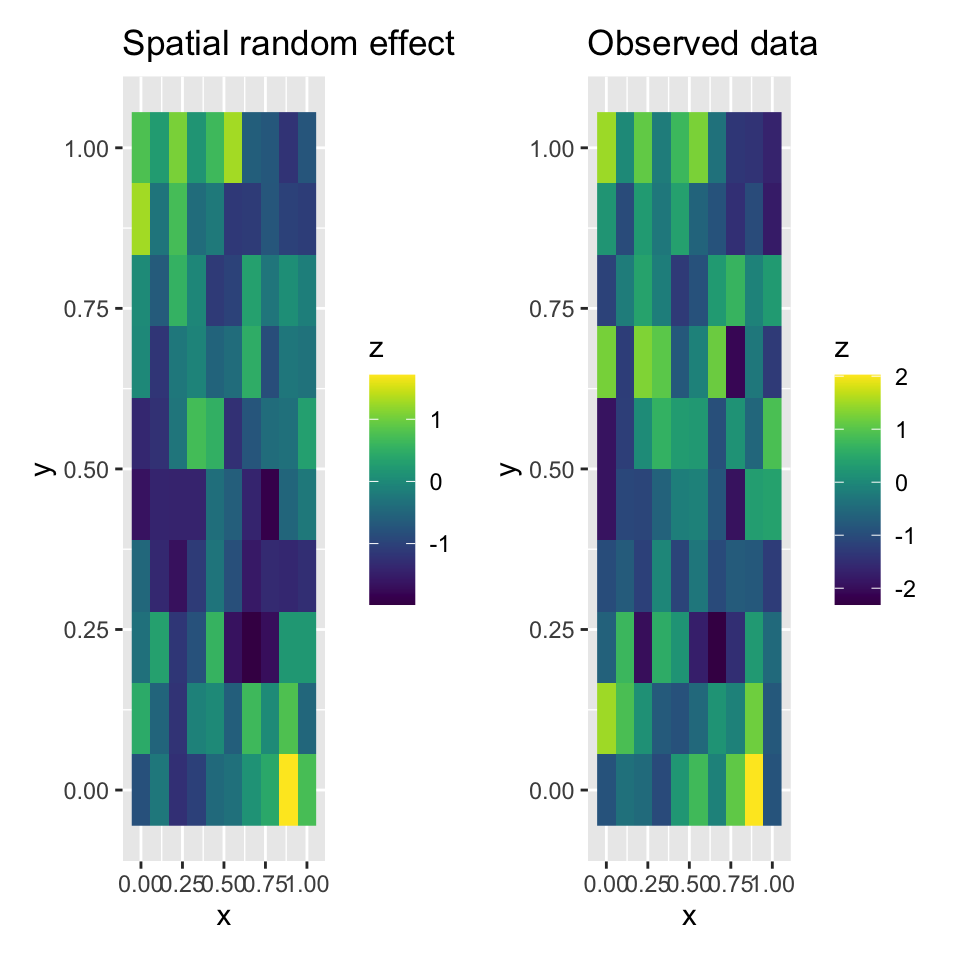
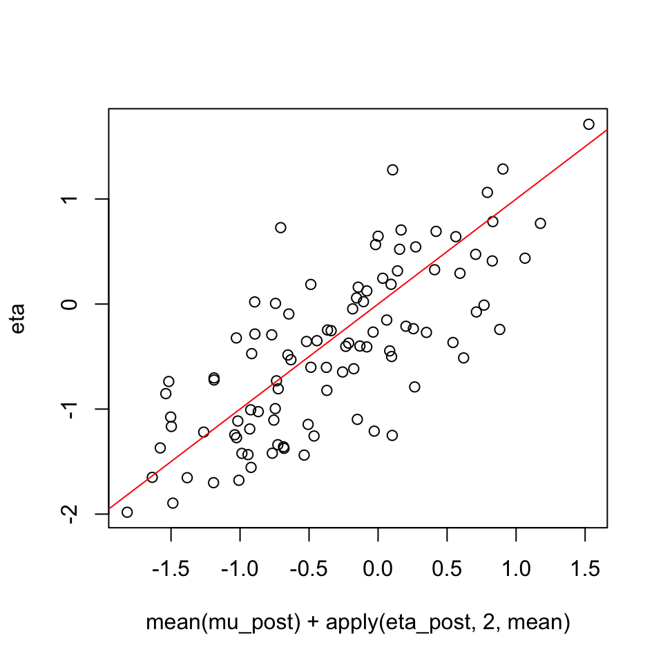
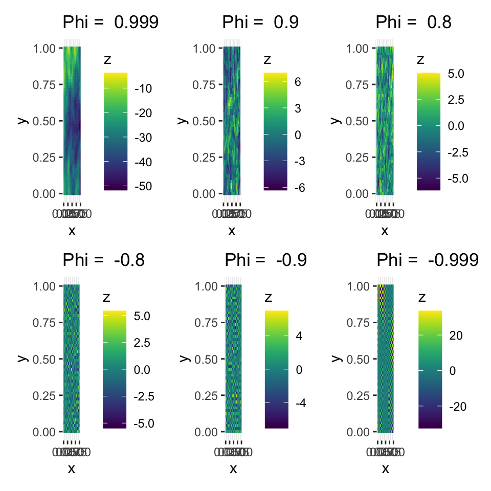
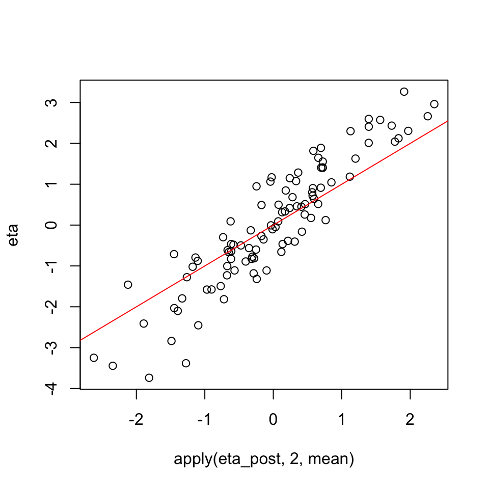

29 Day 29
library(tidyverse)
library(viridis)
library(mvnfast)
library(igraph)
library(Matrix)
library(patchwork)
library(rstan)
## use recommended rstan settings
options(mc.cores = parallel::detectCores())
rstan_options(auto_write = TRUE)
library(bayesplot)
set.seed(101)29.1 Announcements
29.2 Areal Data
- Areal data are data that are associated with a spatial region
- the actual data might have occured at point locations but are aggregated across space
- example: disease spread
- individuals either have a disease or don’t (point level data) but the data are reported at aggregate levels (number of infections in the county/state/country)
- some data are only meaninful at the area level: e.g., votes in a county/state
areal data are models for discrete spatial domains (geostatistical models are for continuous spatial domains)
partition the domain \(\mathcal{D}\) into \(n\) discrete units
define \(\mathbf{y} = (y_1, \ldots, y_n)'\)
- spatial models:
- account for spatial autocorrelation between regions which improves the residual error model
- borrows strength across locations to improve inference
Question: how to measure the “closeness” of irregulary spaced regions?
draw figure here
- can use spatial centroid
draw figure here
can I just use the geostatistical methods introduced previously?
geostatistical models produce a valid, positive definite covariance matrix
using continuous (geostatistical) methods works if the regions are rectangular shaped and of the same general size
can also model the covariance using adjacency matrices and graphical models
29.3 Gaussian Markov random fields (GMRFs)
A Markov random field is specified from a set of conditional probability distributions.
Let \(\mathbf{y} = (y_1, \ldots, y_n)'\) be the \(n\)-dimensional vector for each of the \(i\) observations in the spatial doamin \(\mathcal{D}\). Let \(\mathcal{A} \in \mathcal{D}\) be defined as a subset of regions in the domain, \(\mathbf{y}_{\mathcal{A}} = \{ y_i | i \in \mathcal{A}\}\) be the set of observation in the subdomain \(\mathcal{A}\), and \(\mathbf{y}_{-\mathcal{A}} = \{ y_i | i \notin \mathcal{A}\}\) be the set of observation not in the subdomain \(\mathcal{A}\)
A GMRF is a Gaussian distributed random vector \(\mathbf{y}\) which obeys some conditional independence properties. For some \(i \neq j\),
\[\begin{align*} y_i \perp y_j | \mathbf{y}_{-\{i, j\}}, \end{align*}\]
where, conditioned on \(\mathbf{y}_{-\{i, j\}}\), \(y_i\) and \(y_j\) are independent.
Given a graph \(\mathcal{G} = (\mathcal{V}, \mathcal{E})\) where \(\mathcal{V} = \{1, \ldots, n\}\) is the set of vertices and \(\mathcal{E} = \{ \{i, j\} | i, j \in \mathcal{V}\}\), the set of edges of the graph, the goal is to sepcify a GMRF that has conditional independence properties that are consistent with an underlying graph structure (typically one implied by the adjacency structure of the spatial domain)
This turns out to be quite easy by using the precision matrix \(\mathbf{Q} = \boldsymbol{\Sigma}^{-1}\) of the random variable \(\mathbf{y}\)
Definition: A random vector \(\mathbf{y}\) is a GMRF with respect to the labeled graph \(\mathcal{G} = (\mathcal{V}, \mathcal{E})\) with mean \(\boldsymbol{\mu}\) and symmetric, positive definite precision matrix \(\mathbf{Q}\) \(\Leftrightarrow\) its density is
\[\begin{align*} [\mathbf{y} | \boldsymbol{\mu}, \mathbf{Q}] & = (2 \pi)^{-n / 2} |\mathbf{Q}|^{1/2} \exp\left( -1 / 2 \left( \mathbf{y} - \boldsymbol{\mu} \right) \mathbf{Q} \left(\mathbf{y} - \boldsymbol{\mu} \right) \right) \end{align*}\] and \[\begin{align*} Q_{i, j} \neq 0 \hspace{1em} \Leftrightarrow \hspace{1em} \{i, j\} \in \mathcal{E} \hspace{1em} \forall \hspace{1em} i \neq j \end{align*}\]
Note: this implies that \(Q_{i, j} = 0 \hspace{1em} \forall \hspace{1em} i \neq j\) where \(\{i, j\} \notin \mathcal{E}\)
29.3.1 Example:
- A stationary autoregressive time series of order 1
\[\begin{align*} y_t = \phi y_{t-1} + \varepsilon_t \end{align*}\]
where \(|\phi| < 1\), \(\varepsilon_t \stackrel{iid}{\sim} N(0, 1)\), and \(y_1 \sim N(0, 1 / (1 - \phi^2))\).
n <- 500
phi <- 0.9
## autoregression model representation
y <- rep(0, n)
y[1] <- rnorm(1, 0, sqrt(1 / (1 - phi^2)))
for (t in 2:n) {
y[t] <- rnorm(1, phi * y[t-1], 1)
}
plot(y, type = 'l')
- The set of edges is \(\mathcal{E} = \{ \{ 1, 2\}, \{2, 3\}, \ldots, \{n-1, n\} \}\) and the precision matrix \(\mathbf{Q}\) has nonzero elements \(Q_{i,j} = -\phi\) for \(|i-j| = 1\), \(Q_{1,1} = Q_{n,n} = 1\) and \(Q_{i,i} = 1 + \phi^2\) for \(i = 2, \ldots, n-1\).
## GMRF representation
Q <- matrix(0, n, n)
Q <- toeplitz(c(0, -phi, rep(0, n - 2)))
diag(Q) <- c(1, rep(1 + phi^2, n - 2), 1)
Q[1:5, 1:5]
y <- as.vector(rmvn(1, rep(0, n), solve(Q)))
plot(y, type = 'l')## [,1] [,2] [,3] [,4] [,5]
## [1,] 1.0 -0.90 0.00 0.00 0.00
## [2,] -0.9 1.81 -0.90 0.00 0.00
## [3,] 0.0 -0.90 1.81 -0.90 0.00
## [4,] 0.0 0.00 -0.90 1.81 -0.90
## [5,] 0.0 0.00 0.00 -0.90 1.81
- notice how sparse the matrix \(\mathbf{Q}\) is
## [1] 0.994- Recall the autocorrelation function of an AR(1) timeseries at lag \(h\):
- \(\gamma(h) = \phi^h\)
Sigma <- solve(Q)
plot(
Sigma[1, ] / Sigma[1, 1],
type = 'p',
main = "GMRF ACF in points, theoretical ACF in red"
)
lines(c(1, phi^(1:(n-1))), col = "red")
where \(\boldsymbol{\Sigma}\) is a dense matrix
## [1] 0therefore, the GMRF formulation can be evaluated using \(\mathcal{O}(n)\) algorithms
29.4 Conditional Autoregressive models (CAR models)
spatial data have no inherent ordering, but we can still define a set of edges \(\mathcal{E}\) based on spatial adjacency
Many ways to define adjacency – typically if two regions share a border, they are adjacent
\(i \sim j\) implies that site \(i\) and \(j\) are adjacent (equivalent to \(\{i, j\} \in \mathcal{E}\))
\(\mathbf{A}\) is an \(n \times n\) adjacency matrix
\(A_{ij} = I\{i \sim j\}\) is an indicator of adjacency
\(N_i = \{j | A_{ij} = 1\}\) is the set of neighbors of region \(i\)
\(d_i = \sum_{j=1}^n A_{ij}\) is the number of neighbors of region \(i\)
- \(\mathbf{D} = \operatorname{diag}(d_1, \ldots, d_n)\)
\(\bar{y}_i = \frac{1}{d_i} \sum_{j=1}^n A_{ij} y_i\) is the mean of region \(i\)’s neighbors (note the similarity to a nearest neighbors type algorithm)
29.4.1 Models built based on conditional distributions: \(y_i | \mathbf{y}_{-i}\)
- CAR model is a GMRF given by
\[\begin{align*} y_i | \mathbf{y}_{-i} & \sim N \left( \phi \bar{y}_i, \frac{\sigma^2}{d_i} \right) \end{align*}\]
where each region \(i\) is conditionally independent from all other regions given its neighbors
If there is a valid joint distribution that has these full conditional distributions, the conditional distributions are said to be compatible
- how do we know if these conditional distributions are compatible?
Consider the joint distribution
\[\begin{align*} \mathbf{y} \sim N \left(0, \sigma^2 \left(\mathbf{D} - \phi \mathbf{A} \right)^{-1} \right) \end{align*}\]
the covariance is positive definite if \(\frac{1}{\lambda_n} < \phi < \frac{1}{\lambda_1}\) where \(\lambda_n\) is the smallest eigenvalue and \(\lambda_1\) is the largest eigenvalue of \(\mathbf{D}^{-1/2}\mathbf{A}\mathbf{D}^{-1/2}\)
- First, let \(\boldsymbol{\Gamma} \boldsymbol{\Lambda} \boldsymbol{\Gamma}'\) be the eigen-decomposition of \(\mathbf{D}^{-1/2}\mathbf{A}\mathbf{D}^{-1/2}\) where \(\boldsymbol{\Lambda} = \operatorname{diag}(\lambda_1, \ldots, \lambda_n)\) with \(\lambda_1 \geq \lambda_2 \geq \cdots \geq \lambda_n\)
\[\begin{align*} \mathbf{D} - \phi \mathbf{A} & = \mathbf{D}^{1/2} (\mathbf{I} - \phi \mathbf{D}^{-1/2}\mathbf{A}\mathbf{D}^{-1/2}) \mathbf{D}^{1/2} \\ & = \mathbf{D}^{1/2} (\mathbf{I} - \phi \boldsymbol{\Gamma} \boldsymbol{\Lambda} \boldsymbol{\Gamma}') \mathbf{D}^{1/2} \\ & = \mathbf{D}^{1/2} (\boldsymbol{\Gamma} \boldsymbol{\Gamma}' - \phi \boldsymbol{\Gamma} \boldsymbol{\Lambda} \boldsymbol{\Gamma}') \mathbf{D}^{1/2} \\ & = \mathbf{D}^{1/2} \boldsymbol{\Gamma} (\mathbf{I} - \phi \boldsymbol{\Lambda}) \boldsymbol{\Gamma}' \mathbf{D}^{1/2} \\ \end{align*}\]
which has positive eigenvlaues \(\Leftrightarrow\) \(\frac{1}{\lambda_n} < \phi < \frac{1}{\lambda_1}\) (if \(\phi\) was outside this range, the \(\mathbf{I} - \phi \boldsymbol{\Lambda}\) would contain negative values which would violate the positive definite condition)
- To show the above model gives the desired conditional probability distributions
\[\begin{align*} \mathbf{y} & \sim N \left(0, \sigma^2 \left(\mathbf{D} - \phi \mathbf{A} \right)^{-1} \right) \\ & \propto \exp \left( -\frac{1}{2 \sigma^2} \mathbf{y}' \left(\mathbf{D} - \phi \mathbf{A} \right) \mathbf{y} \right) \\ & \propto \exp \left( -\frac{1}{2 \sigma^2} \left( \sum_{i=1}^n m_i y_i^2 - 2 \phi \sum_{i \sim j} y_{ij} \right) \right) \end{align*}\]
where the conditional probability distribution \([y_i | \mathbf{y}_{-i}]\) is
\[\begin{align*} [y_i | \mathbf{y}_{-i}] & \propto \exp \left( -\frac{1}{2 \sigma^2} \left( m_i y_i^2 - 2 \phi m_i \bar{y}_i \right) \right) \\ & \propto \exp \left( -\frac{1}{2 \frac{\sigma^2} {m_i}} \left( y_i^2 - 2 \phi \bar{y}_i \right) \right) \\ & \propto \exp \left( -\frac{1}{2 \frac{\sigma^2} {m_i}} \left( y_i - \phi \bar{y}_i \right)^2 \right) \\ \end{align*}\]
which is the kernel of the conditional probability distribution we started with
\[\begin{align*} y_i | \mathbf{y}_{-i} & \sim N \left( \phi \bar{y}_i, \frac{\sigma^2}{d_i} \right) \end{align*}\]
The multivariate normal likelihood for the CAR model is:
\[\begin{align*} [\mathbf{y} | \boldsymbol{\mu}, \mathbf{Q}] & = (2 \pi)^{-n / 2} |\mathbf{D} - \phi \mathbf{A}|^{1/2} \exp\left( -1 / 2 \left( \mathbf{y} - \boldsymbol{\mu} \right) \left(\mathbf{D} - \phi \mathbf{A} \right) \left(\mathbf{y} - \boldsymbol{\mu} \right) \right) \end{align*}\]
The kernel of the likelihood is trivially fast due to sparse matrix operations and due to the precision construction (no matrix inverses!)
The determinant \(|\mathbf{D} - \phi \mathbf{A}|\) is easy to calculate as
\[\begin{align*} |\mathbf{D} - \phi \mathbf{A}| & = |\mathbf{D}^{1/2} \left( \mathbf{I} - \phi \mathbf{A} \right) \mathbf{D}^{1/2}| \\ & = |\mathbf{D}^{1/2} \boldsymbol{\Gamma} \left( \mathbf{I} - \phi \boldsymbol{\Lambda} \right) \boldsymbol{\Gamma}' \mathbf{D}^{1/2}| \\ & = |\mathbf{D}^{1/2} \boldsymbol{\Gamma}| | \mathbf{I} - \phi \boldsymbol{\Lambda}| |\boldsymbol{\Gamma}' \mathbf{D}^{1/2}| \\ & = | \mathbf{I} - \phi \boldsymbol{\Lambda}| \\ & = \prod_{i=1}^n| (1 - \phi \lambda_i) \end{align*}\]
- sparse routines can be used to calculate these eigenvalues
if \(\phi \in [0, 1)\), this model is called the conditional autoregressive (CAR) model and the covariance is positive definite so that the joint distribution of \(\mathbf{y}\) is proper (integrates to 1)
if \(\phi = 1\), this is called an intrinsic CAR (ICAR) model and the covariance is singular so this model is only useful as a prior
very efficient model for Bayesian inference and MCMC
needs an additional assumption that \(\sum_{i=1}^n y_i = 0\)
Note: \(\phi\) is not a correlation! However, correlation increases as \(\phi\) increases
- typicallly, we assume \(\phi\) will be large A close look at the spatial structure implied by the CAR and SAR models
if \(\phi = 0\), then the observations are spatially independent
n <- 10^2
phi <- 0.4
## construct a sparse matrix adjacency matrix for a 2-d lattice
A <- igraph::as_adjacency_matrix(make_lattice(length = sqrt(n), dim = 2), sparse = TRUE)
A[1:5, 1:5]
D <- Diagonal(x = colSums(A))
D[1:5, 1:5]
Q <- D - phi * A
Q[1:5, 1:5]
Sigma <- solve(Q)
## calculate the correlation from a first order CAR
Sigma[5, 6] / Sigma[5, 5]
n_phi <- 500
phi <- seq(-1, 1, length.out = n_phi)[-c(1, n_phi)]
rho <- rep(0, n_phi - 2)
## do this as a loop
for (i in 1:(n_phi-2)) {
A <- igraph::as_adjacency_matrix(make_lattice(length = sqrt(n), dim = 2), sparse = TRUE)
D <- Diagonal(x = colSums(A))
Q <- D - phi[i] * A
Sigma <- solve(Q)
## calculate the correlation from a first order CAR
rho[i] <- Sigma[5, 6] / Sigma[5, 5]
}
data.frame(phi = phi, rho = rho) %>%
ggplot(aes(x = phi, y = rho)) +
geom_line() +
ylim(c(-1, 1)) +
ylab("correlation") +
ggtitle("CAR correlation (lag-1) vs phi parameter") +
geom_abline(slope = 1, intercept = 0, color = "red") ## 5 x 5 sparse Matrix of class "dgCMatrix"
##
## [1,] . 1 . . .
## [2,] 1 . 1 . .
## [3,] . 1 . 1 .
## [4,] . . 1 . 1
## [5,] . . . 1 .
## 5 x 5 diagonal matrix of class "ddiMatrix"
## [,1] [,2] [,3] [,4] [,5]
## [1,] 2 . . . .
## [2,] . 3 . . .
## [3,] . . 3 . .
## [4,] . . . 3 .
## [5,] . . . . 3
## 5 x 5 sparse Matrix of class "dgCMatrix"
##
## [1,] 2.0 -0.4 . . .
## [2,] -0.4 3.0 -0.4 . .
## [3,] . -0.4 3.0 -0.4 .
## [4,] . . -0.4 3.0 -0.4
## [5,] . . . -0.4 3.0
## [1] 0.1393
- Plot how the \(\phi\) parameter determines the correlation
## simulate some data
simulate_data <- function(n, phi) {
locs <-
expand.grid(
seq(0, 1, length.out = sqrt(n)),
seq(0, 1, length.out = sqrt(n))
)
# plot(make_lattice(length = sqrt(n), dim = 2))
A <- make_lattice(length = sqrt(n), dim = 2) %>%
as_adjacency_matrix(sparse = TRUE)
D <- Diagonal(x = colSums(A))
Q <- D - phi * A
## cholesky (this is a sparse matrix that is upper diagonal)
R <- chol(Q)
y <- backsolve(R, rnorm(n))
## generate the plot
output <- data.frame(x = locs[, 1], y = locs[, 2], z = y) %>%
ggplot(aes(x = x, y = y, fill = z)) +
geom_raster() +
scale_fill_viridis() +
ggtitle(paste("Phi = ", phi))
return(output)
}
p1 <- simulate_data(n = 50^2, phi = 0.999)
p2 <- simulate_data(n = 50^2, phi = 0.9)
p3 <- simulate_data(n = 50^2, phi = 0.8)
p4 <- simulate_data(n = 50^2, phi = - 0.8)
p5 <- simulate_data(n = 50^2, phi = -0.9)
p6 <- simulate_data(n = 50^2, phi = - 0.999)
(p1 | p2 | p3) / (p4 | p5 | p6)
29.4.1.1 Fitting a CAR model in stan
## simulate data for fitting the model
n <- 10^2
phi <- 0.999
sigma2 <- 0.5
locs <-
expand.grid(
seq(0, 1, length.out = sqrt(n)),
seq(0, 1, length.out = sqrt(n))
)
# plot(make_lattice(length = sqrt(n), dim = 2))
A <- make_lattice(length = sqrt(n), dim = 2) %>%
as_adjacency_matrix(sparse = TRUE)
D <- Diagonal(x = colSums(A))
Q <- D - phi * A
## cholesky (this is a sparse matrix that is upper diagonal)
R <- chol(Q)
eta <- backsolve(R, rnorm(n))
y <- eta + rnorm(n, 0, sqrt(sigma2))
p1 <- data.frame(x = locs[, 1], y = locs[, 2], z = eta) %>%
ggplot(aes(x = x, y = y, fill = z)) +
geom_raster() +
scale_fill_viridis() +
ggtitle("Spatial random effect")
p2 <- data.frame(x = locs[, 1], y = locs[, 2], z = y) %>%
ggplot(aes(x = x, y = y, fill = z)) +
geom_raster() +
scale_fill_viridis() +
ggtitle("Observed data")
p1 + p2
we need to define a stan model
create a stan model in a folder named
stan_modelsin the Rstudio project folderprint the output of the model
spatial-car.stan
## [1] "data {"
## [2] " int<lower=0> N; // the number of observations"
## [3] " vector[N] y; // the obersved values"
## [4] " matrix[N, N] A; // the N times N adjacency matrix "
## [5] " matrix[N, N] D; // the N times N diagonal matrix of neighbors"
## [6] "}"
## [7] "parameters {"
## [8] " vector[N] eta; //"
## [9] " real mu;"
## [10] " real<lower=0> sigma2;"
## [11] " real<lower=0> tau2;"
## [12] " real<lower=0, upper=1> phi;"
## [13] "}"
## [14] "// transformed parameters {"
## [15] "// vector[N] y_pred = mu + w_s;"
## [16] "// }"
## [17] "model {"
## [18] " matrix[N, N] Sigma_inv = (D - phi * A) / tau2;"
## [19] " eta ~ multi_normal_prec(rep_vector(0, N), Sigma_inv);"
## [20] " mu ~ normal(0, 1);"
## [21] " sigma2 ~ cauchy(0, 5);"
## [22] " tau2 ~ cauchy(0, 5);"
## [23] " y ~ normal(mu + eta, sigma2);"
## [24] "}"Fitting the model
- note: this is very slow for even moderate sized data
fit <- stan(
file = here::here("stan_models", "spatial-car.stan"),
## note: convert from a sparse matrix format to regular matrix
## for fitting in stan
data = list(y = y, N = n, D = as.matrix(D), A = as.matrix(A)),
iter = 5000
) ## Warning: There were 111 divergent transitions after warmup. Increasing adapt_delta above 0.8 may help. See
## http://mc-stan.org/misc/warnings.html#divergent-transitions-after-warmup## Warning: There were 4 chains where the estimated Bayesian Fraction of Missing Information was low. See
## http://mc-stan.org/misc/warnings.html#bfmi-low## Warning: Examine the pairs() plot to diagnose sampling problems## Warning: The largest R-hat is 1.12, indicating chains have not mixed.
## Running the chains for more iterations may help. See
## http://mc-stan.org/misc/warnings.html#r-hat## Warning: Bulk Effective Samples Size (ESS) is too low, indicating posterior means and medians may be unreliable.
## Running the chains for more iterations may help. See
## http://mc-stan.org/misc/warnings.html#bulk-ess## Warning: Tail Effective Samples Size (ESS) is too low, indicating posterior variances and tail quantiles may be unreliable.
## Running the chains for more iterations may help. See
## http://mc-stan.org/misc/warnings.html#tail-ess- Note: this is giving warinings – it’s best to pay attention to these in stan
print(fit, probs = c(0.1, 0.9), pars = c("mu", "tau2", "sigma2", "phi", "lp__"))
mcmc_trace(fit, regex_pars = c("mu", "tau2", "sigma2", "phi"))
mcmc_areas(fit, regex_pars = c("mu", "tau2", "sigma2", "phi"))## Warning: `expand_scale()` is deprecated; use `expansion()`
## instead.## Inference for Stan model: spatial-car.
## 4 chains, each with iter=5000; warmup=2500; thin=1;
## post-warmup draws per chain=2500, total post-warmup draws=10000.
##
## mean se_mean sd 10% 90% n_eff Rhat
## mu -0.34 0.01 0.15 -0.52 -0.16 350 1.00
## tau2 2.14 0.07 0.76 1.06 3.07 104 1.05
## sigma2 0.42 0.03 0.22 0.13 0.72 59 1.10
## phi 0.58 0.01 0.22 0.27 0.85 919 1.01
## lp__ 30.36 8.78 54.35 -18.03 114.13 38 1.16
##
## Samples were drawn using NUTS(diag_e) at Sun Mar 29 16:03:21 2020.
## For each parameter, n_eff is a crude measure of effective sample size,
## and Rhat is the potential scale reduction factor on split chains (at
## convergence, Rhat=1).

- plot fitted vs. simulated spatial random effect

- looks like there might be a mean shift (non-identifiability)
mu_post <- extract(fit)$mu
plot(mean(mu_post) + apply(eta_post, 2, mean), eta)
abline(0, 1, col = "red")
## [1] -0.4367Note: the above model is inefficient as it doesn’t leverage sparse matrix operations. More complicated (and efficient) code is available here
Example where the CAR parameter \(\phi = 1\) is available here
29.4.2 Simultaneous autoregressive (SAR) model
\[\begin{align*} y_i & = \phi \frac{1}{d_i} \sum_{j \in N_i} y_j + \varepsilon_i \end{align*}\]
where \(\varepsilon_i \stackrel{iid}{\sim} N(0, \sigma^2)\)
Note: this is not a conditional distribution like the CAR model – this gives the definition of a joint distribution
Some algebra gives
\[\begin{align*} & \mathbf{y} = \rho \mathbf{A} \mathbf{D}^{-1} \mathbf{y} + \boldsymbol{\varepsilon} \\ \Rightarrow & \left(\mathbf{I} - \rho \mathbf{A} \mathbf{D}^{-1} \right) \mathbf{y} = \boldsymbol{\varepsilon} \\ \Rightarrow & \mathbf{y} = \left(\mathbf{I} - \rho \mathbf{A} \mathbf{D}^{-1} \right)^{-1} \boldsymbol{\varepsilon} \\ \end{align*}\]
which implies the joint distribution
\[\begin{align*} \mathbf{y} & \sim \operatorname{N} \left(\mathbf{0}, \left(\mathbf{I} - \rho \mathbf{A} \mathbf{D}^{-1} \right)^{-1}\left(\mathbf{I} - \rho \mathbf{A} \mathbf{D}^{-1} \right)^{-1} \right) \end{align*}\]
which has a similar form to the SPDE models
Note: \(\phi\) is not a correlation! However, correlation increases as \(\phi\) increases
- typicallly, we assume \(\phi\) will be large A close look at the spatial structure implied by the CAR and SAR models
if \(\phi = 0\), then the observations are spatially independent
n <- 10^2
phi <- 0.4
## construct a sparse matrix adjacency matrix for a 2-d lattice
A <- igraph::as_adjacency_matrix(make_lattice(length = sqrt(n), dim = 2), sparse = FALSE)
D <- diag(rowSums(A))
Sigma <- solve(diag(n) - phi * A %*% solve(D)) %*% t(solve(diag(n) - phi * A %*% solve(D)))
## calculate the correlation from a first order SAR
cov2cor(Sigma)[5, 6]
## do this as a loop
n_phi <- 500
phi <- seq(-1, 1, length.out = n_phi)[-c(1, n_phi)]
rho <- rep(0, n_phi - 2)
A <- igraph::as_adjacency_matrix(make_lattice(length = sqrt(n), dim = 2), sparse = FALSE)
D <- diag(rowSums(A))
for (i in 1:(n_phi-2)) {
Sigma <- solve(diag(n) - phi[i] * A %*% solve(D)) %*% t(solve(diag(n) - phi[i] * A %*% solve(D)))
## calculate the correlation from a first order CAR
rho[i] <- cov2cor(Sigma)[5, 6]
}
data.frame(phi = phi, rho = rho) %>%
ggplot(aes(x = phi, y = rho)) +
geom_line() +
ylim(c(-1, 1)) +
ylab("correlation") +
ggtitle("SAR correlation (lag-1) vs. phi parameter") +
geom_abline(slope = 1, intercept = 0, color = "red")## [1] 0.2755
- Plot how the \(\phi\) parameter determines the correlation
## simulate some data
simulate_data <- function(n, phi) {
locs <-
expand.grid(
seq(0, 1, length.out = sqrt(n)),
seq(0, 1, length.out = sqrt(n))
)
# plot(make_lattice(length = sqrt(n), dim = 2))
A <- make_lattice(length = sqrt(n), dim = 2) %>%
as_adjacency_matrix(sparse = TRUE)
D <- Diagonal(x = colSums(A))
Q <- (diag(n) - phi * A %*% solve(D)) %*% t(diag(n) - phi * A %*% solve(D))
## cholesky (this is a sparse matrix that is upper diagonal)
R <- chol(Q)
y <- backsolve(R, rnorm(n))
## generate the plot
output <- data.frame(x = locs[, 1], y = locs[, 2], z = y) %>%
ggplot(aes(x = x, y = y, fill = z)) +
geom_raster() +
scale_fill_viridis() +
ggtitle(paste("Phi = ", phi))
return(output)
}
p1 <- simulate_data(n = 50^2, phi = 0.999)
p2 <- simulate_data(n = 50^2, phi = 0.9)
p3 <- simulate_data(n = 50^2, phi = 0.8)
p4 <- simulate_data(n = 50^2, phi = - 0.8)
p5 <- simulate_data(n = 50^2, phi = -0.9)
p6 <- simulate_data(n = 50^2, phi = - 0.999)
(p1 | p2 | p3) / (p4 | p5 | p6)
29.4.2.1 Fitting a SAR model in stan
## simulate data for fitting the model
n <- 10^2
phi <- 0.9
sigma2 <- 0.5
tau2 <- 2
locs <-
expand.grid(
seq(0, 1, length.out = sqrt(n)),
seq(0, 1, length.out = sqrt(n))
)
# plot(make_lattice(length = sqrt(n), dim = 2))
A <- make_lattice(length = sqrt(n), dim = 2) %>%
as_adjacency_matrix(sparse = TRUE)
D <- Diagonal(x = colSums(A))
Q <- (diag(n) - phi * A %*% D) %*% t(diag(n) - phi * A %*% D) / tau2
## cholesky (this is a sparse matrix that is upper diagonal)
R <- chol(Q)
eta <- backsolve(R, rnorm(n))
y <- eta + rnorm(n, 0, sqrt(sigma2))
p1 <- data.frame(x = locs[, 1], y = locs[, 2], z = eta) %>%
ggplot(aes(x = x, y = y, fill = z)) +
geom_raster() +
scale_fill_viridis() +
ggtitle("Spatial random effect")
p2 <- data.frame(x = locs[, 1], y = locs[, 2], z = y) %>%
ggplot(aes(x = x, y = y, fill = z)) +
geom_raster() +
scale_fill_viridis() +
ggtitle("Observed data")
p1 + p2
we need to define a stan model
print the output of the model
spatial-sar.stan
## [1] "data {"
## [2] " int<lower=0> N;"
## [3] " vector[N] y;"
## [4] " matrix[N, N] A;"
## [5] " matrix[N, N] D;"
## [6] "}"
## [7] "transformed data {"
## [8] " matrix[N, N] I = diag_matrix(rep_vector(1, N));"
## [9] " matrix[N, N] A_D_inv;"
## [10] " A_D_inv = A * inverse(D);"
## [11] "}"
## [12] "parameters {"
## [13] " vector[N] eta;"
## [14] " real mu;"
## [15] " real<lower=0> sigma2;"
## [16] " real<lower=0> tau2;"
## [17] " real<lower=0,upper=1> phi;"
## [18] "}"
## [19] "transformed parameters {"
## [20] " vector[N] y_pred = mu + eta;"
## [21] "}"
## [22] "model {"
## [23] " matrix[N,N] C = I - phi * A_D_inv;"
## [24] " matrix[N,N] Sigma_inv = C * C' / tau2;"
## [25] " eta ~ multi_normal_prec(rep_vector(0, N), Sigma_inv);"
## [26] " mu ~ normal(0, 1);"
## [27] " sigma2 ~ cauchy(0, 5);"
## [28] " tau2 ~ cauchy(0, 5);"
## [29] " y ~ normal(mu + eta, sigma2);"
## [30] "}"
## [31] ""Fitting the model
- note: this is very slow for even moderate sized data
fit <- stan(
file = here::here("stan_models", "spatial-sar.stan"),
## note: convert from a sparse matrix format to regular matrix
## for fitting in stan
data = list(y = y, N = n, D = as.matrix(D), A = as.matrix(A)),
iter = 5000
) ## Warning: There were 12 divergent transitions after warmup. Increasing adapt_delta above 0.8 may help. See
## http://mc-stan.org/misc/warnings.html#divergent-transitions-after-warmup## Warning: There were 4 chains where the estimated Bayesian Fraction of Missing Information was low. See
## http://mc-stan.org/misc/warnings.html#bfmi-low## Warning: Examine the pairs() plot to diagnose sampling problems## Warning: The largest R-hat is 1.13, indicating chains have not mixed.
## Running the chains for more iterations may help. See
## http://mc-stan.org/misc/warnings.html#r-hat## Warning: Bulk Effective Samples Size (ESS) is too low, indicating posterior means and medians may be unreliable.
## Running the chains for more iterations may help. See
## http://mc-stan.org/misc/warnings.html#bulk-ess## Warning: Tail Effective Samples Size (ESS) is too low, indicating posterior variances and tail quantiles may be unreliable.
## Running the chains for more iterations may help. See
## http://mc-stan.org/misc/warnings.html#tail-ess- Note: this is giving warinings – it’s best to pay attention to these in stan
print(fit, probs = c(0.1, 0.9), pars = c("mu", "tau2", "sigma2", "phi", "lp__"))
mcmc_trace(fit, regex_pars = c("mu", "tau2", "sigma2", "phi"))
mcmc_areas(fit, regex_pars = c("mu", "tau2", "sigma2", "phi"))## Warning: `expand_scale()` is deprecated; use `expansion()`
## instead.## Inference for Stan model: spatial-sar.
## 4 chains, each with iter=5000; warmup=2500; thin=1;
## post-warmup draws per chain=2500, total post-warmup draws=10000.
##
## mean se_mean sd 10% 90% n_eff Rhat
## mu 0.07 0.01 0.20 -0.16 0.32 829 1.00
## tau2 1.72 0.15 0.99 0.25 2.92 46 1.09
## sigma2 0.95 0.09 0.51 0.23 1.61 35 1.13
## phi 0.21 0.01 0.15 0.04 0.42 517 1.01
## lp__ -84.45 8.55 57.41 -139.39 5.26 45 1.09
##
## Samples were drawn using NUTS(diag_e) at Sun Mar 29 16:07:53 2020.
## For each parameter, n_eff is a crude measure of effective sample size,
## and Rhat is the potential scale reduction factor on split chains (at
## convergence, Rhat=1).


- plot fitted vs. simulated spatial random effect

More on CAR and SAR models is available here ### Theoretical Results for more general model classes
In general, the Hammersley-Clifford Theorem can be used to show that a set of conditional probability distributions specifies a compatible joint probability distribution
If you start with compatible conditional probability distributions, Brooks’ Lemma is a formula for computing the joint distribution
random variables \(\mathcal{X} = \{ X_v \}_{v \in \mathcal{V}}\) form a Markov random field with respect to \(\mathcal{G}\) if they satisfy - Pairwise Markov property: